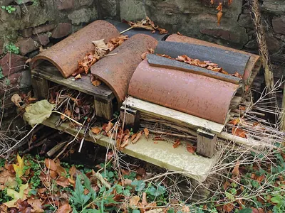
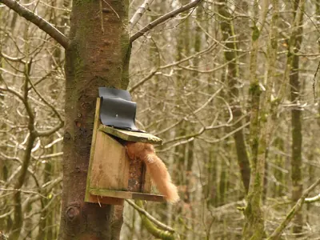
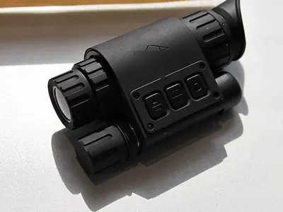

Jetzt besonders gut zu beobachten
-
 Foto: Bengt Nyman, CC BY 2.0 – Lizenzangaben im Bildnachweis dämmerungsaktivnachtaktiv
Foto: Bengt Nyman, CC BY 2.0 – Lizenzangaben im Bildnachweis dämmerungsaktivnachtaktiv -
 Foto: Richard Bartz, CC BY-SA 2.5 – Lizenzangaben im Bildnachweis dämmerungsaktivnachtaktiv
Foto: Richard Bartz, CC BY-SA 2.5 – Lizenzangaben im Bildnachweis dämmerungsaktivnachtaktiv -
 Foto: James Lindsey, CC BY-SA 3.0 – Lizenzangaben im Bildnachweis tagaktivnachtaktiv
Foto: James Lindsey, CC BY-SA 3.0 – Lizenzangaben im Bildnachweis tagaktivnachtaktiv -
 Foto: Martin Mecnarowski, CC BY-SA 3.0 – Lizenzangaben im Bildnachweis dämmerungsaktivnachtaktiv
Foto: Martin Mecnarowski, CC BY-SA 3.0 – Lizenzangaben im Bildnachweis dämmerungsaktivnachtaktiv -
 Foto: Mick E. Talbot, CC BY-SA 3.0 – Lizenzangaben im Bildnachweis tagaktivnachtaktiv
Foto: Mick E. Talbot, CC BY-SA 3.0 – Lizenzangaben im Bildnachweis tagaktivnachtaktiv -
 Foto: Martin Mecnarowski, CC BY-SA 3.0 – Lizenzangaben im Bildnachweis dämmerungsaktivnachtaktiv
Foto: Martin Mecnarowski, CC BY-SA 3.0 – Lizenzangaben im Bildnachweis dämmerungsaktivnachtaktiv -
 Foto: Mas3cf, CC BY-SA 4.0 – Lizenzangaben im Bildnachweis dämmerungsaktivnachtaktiv
Foto: Mas3cf, CC BY-SA 4.0 – Lizenzangaben im Bildnachweis dämmerungsaktivnachtaktiv
Außerdem unterwegs
-
 Foto: Dani Kropivnik, CC BY-SA 3.0 – Lizenzangaben im Bildnachweis nachtaktiv
Foto: Dani Kropivnik, CC BY-SA 3.0 – Lizenzangaben im Bildnachweis nachtaktiv -
 Foto: BadgerHero, CC BY-SA 3.0 – Lizenzangaben im Bildnachweis nachtaktiv
Foto: BadgerHero, CC BY-SA 3.0 – Lizenzangaben im Bildnachweis nachtaktiv -
 Foto: Johann-Nikolaus Andreae, CC BY-SA 2.0 – Lizenzangaben im Bildnachweis dämmerungsaktiv
Foto: Johann-Nikolaus Andreae, CC BY-SA 2.0 – Lizenzangaben im Bildnachweis dämmerungsaktiv -
 Foto: Ray eye, CC BY-SA 2.0 de – Lizenzangaben im Bildnachweis tagaktiv
Foto: Ray eye, CC BY-SA 2.0 de – Lizenzangaben im Bildnachweis tagaktiv -
 Foto: Доктор рукиноги, CC BY-SA 3.0 – Lizenzangaben im Bildnachweis nachtaktiv
Foto: Доктор рукиноги, CC BY-SA 3.0 – Lizenzangaben im Bildnachweis nachtaktivMarderhund
RaubtiereHundeartiger Einwanderer aus Ostasien, der aussieht wie ein Waschbär ohne Ringelschwanz.
-
 Foto: Sylvouille at French Wikipedia, CC BY-SA 1.0 – Lizenzangaben im Bildnachweis dämmerungsaktiv
Foto: Sylvouille at French Wikipedia, CC BY-SA 1.0 – Lizenzangaben im Bildnachweis dämmerungsaktiv -
 Foto: Lviatour, CC BY-SA 3.0 – Lizenzangaben im Bildnachweis dämmerungsaktivnachtaktiv
Foto: Lviatour, CC BY-SA 3.0 – Lizenzangaben im Bildnachweis dämmerungsaktivnachtaktiv -
 Foto: Christian Schulz, CC BY-SA 3.0 de – Lizenzangaben im Bildnachweis tagaktivnachtaktiv
Foto: Christian Schulz, CC BY-SA 3.0 de – Lizenzangaben im Bildnachweis tagaktivnachtaktiv -
 Foto: Charles J. Sharp, CC BY-SA 4.0 – Lizenzangaben im Bildnachweis nachtaktiv
Foto: Charles J. Sharp, CC BY-SA 4.0 – Lizenzangaben im Bildnachweis nachtaktiv -
 Foto: Rhododendrites, CC BY-SA 4.0 – Lizenzangaben im Bildnachweis nachtaktiv
Foto: Rhododendrites, CC BY-SA 4.0 – Lizenzangaben im Bildnachweis nachtaktivWaschbär
RaubtiereEingewanderter Kletterkünstler mit schwarzer Gesichtsmaske und geringeltem Schwanz.
-
 Foto: JJ Harrison, CC BY-SA 3.0 – Lizenzangaben im Bildnachweis dämmerungsaktiv
Foto: JJ Harrison, CC BY-SA 3.0 – Lizenzangaben im Bildnachweis dämmerungsaktiv -
 Foto: Lviatour, CC BY-SA 3.0 – Lizenzangaben im Bildnachweis dämmerungsaktivnachtaktiv
Foto: Lviatour, CC BY-SA 3.0 – Lizenzangaben im Bildnachweis dämmerungsaktivnachtaktiv -
 Foto: Superbass, CC BY-SA 3.0 – Lizenzangaben im Bildnachweis dämmerungsaktivnachtaktiv
Foto: Superbass, CC BY-SA 3.0 – Lizenzangaben im Bildnachweis dämmerungsaktivnachtaktiv
Passend zum Februar
Alle Empfehlungen ansehen- Beispielfoto · Foto: 14GTR, CC BY-SA 4.0 – Lizenzangaben im Bildnachweis

Igelhaus für den Garten
Auswahl bei Amazon
Ein geschützter Platz für den Winterschlaf. Stelle es an eine ruhige, schattige Stelle unter Hecken oder Laub.
Bei Amazon ansehen Igelhaus für den Garten (Werbelink, öffnet in neuem Fenster) - Beispielfoto · Foto: Richard Webb, CC BY-SA 2.0 – Lizenzangaben im Bildnachweis

Futterkasten für Eichhörnchen
Auswahl bei Amazon
Mit Klappdeckel, damit Vögel nicht mitfressen. Am Baumstamm aufgehängt, siehst du die Kletterer aus nächster Nähe.
Bei Amazon ansehen Futterkasten für Eichhörnchen (Werbelink, öffnet in neuem Fenster) - Unser Tipp
Celestron Nature DX 8x42
Celestron
Helles Einsteigerglas für die Dämmerung: 8-fache Vergrößerung, wasserdicht und leicht genug für lange Ansitze.
Bei Amazon ansehen Celestron Nature DX 8x42 (Werbelink, öffnet in neuem Fenster) - Beispielfoto · Foto: Vitaly V. Kuzmin, CC BY-SA 4.0 – Lizenzangaben im Bildnachweis

Wärmebildkamera für Naturbeobachtung
Auswahl bei Amazon
Zeigt warme Tierkörper auch in völliger Dunkelheit und hinter dünnem Gebüsch. So entdeckst du Reh, Fuchs oder Dachs, ohne Licht zu machen.
Bei Amazon ansehen Wärmebildkamera für Naturbeobachtung (Werbelink, öffnet in neuem Fenster)
Werbelink: Wenn du über diesen Link etwas kaufst, erhält der Waldtierkompass eine kleine Provision von Amazon. Für dich ändert sich am Preis nichts. Als Amazon-Partner verdiene ich an qualifizierten Verkäufen.